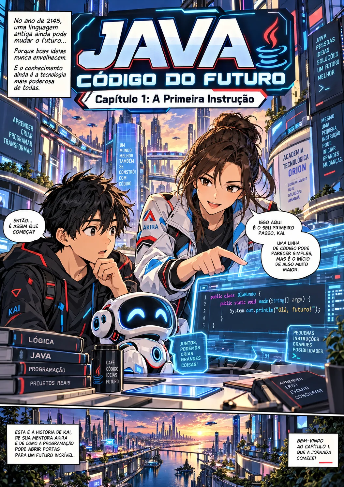

APRENDA JAVA EM UMA AVENTURA
O futuro é escrito com código.
Explore as aventuras de Kai, Akira e seu companheiro robô. Aprenda Java de forma visual, capítulo por capítulo, no seu ritmo.
Explorar os 12 capítulos →
SUA JORNADA COMEÇA AQUI
12 capítulos